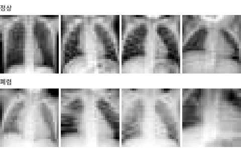

Yang et al. (2023). 소아 흉부 X-ray 5,856장을 28×28 로 줄인 판 (학습 4,708 · 검증 524 · 시험 624), 정상 / 폐렴. Hugging Face 사본에서 받는다

| label | mean_pixel |
|---|---|
| pneumonia | 152 |
| pneumonia | 131 |
| pneumonia | 146.3 |
| pneumonia | 166.5 |
| pneumonia | 137.7 |
| pneumonia | 145.9 |
| 열 | 종류 | 빈칸 | 고유값 수 | 범위 · 대표값 |
|---|---|---|---|---|
| label | 글자 · 범주 | 0 | 2 | 가장 흔한 값: pneumonia (74.2%) |
| mean_pixel | 숫자 | 0 | 4484 | 70.57 ~ 225.5 (평균 145.8) |
폐렴이 3배쯤 많다 (병원 데이터는 아픈 사람이 많다)
폐렴 사진이 조금 더 하얗다 (폐에 하얀 그림자)
| ① 한 행 | X-ray 사진 한 장 (28×28) |
| ② 입력 X | 흑백 픽셀 784개 |
| ③ 출력 y | 정상 0 / 폐렴 1 |
| ④ 평가지표 | 재현율 (놓친 환자) · ROC-AUC |
| ⑤ 기준선 | 가장 흔한 쪽 (폐렴) |
문제를 정할 때 처음 채워 보는 칸들입니다. 여기서 끝이 아니라, 시험 데이터를 어떻게 나눌지 · 틀렸을 때 손해가 얼마인지 · 예측 시점에 정말 알 수 있는 값인지 같은 칸을 더 붙일수록 좋은 문제가 됩니다.
always pneumonia accuracy 62.5% precision 62% recall 100% logistic (threshold 0.5) accuracy 82.9% precision 79% recall 98% logistic (threshold 0.9) accuracy 85.3% precision 89% recall 87% ROC-AUC 0.92
누가, 왜, 어떻게 만든 데이터인지 직접 확인해 보세요.
프로젝트 주제를 고를 때 참고하세요 (일반적인 예시).